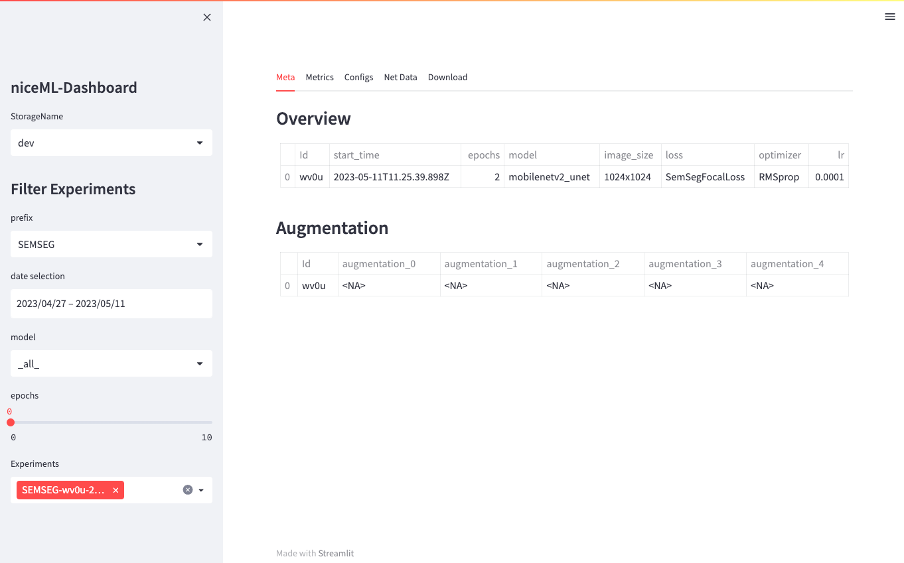

niceML Tutorial¶
Welcome to the tutorial for niceML, a Python package that helps you set up your machine learning projects faster.
In this tutorial, we will
- walk you through the installation process,
- initialize a new niceML project,
- demonstrate how to generate a test data set,
- train a semantic segmentation with niceMLs default configuration and
- use introduce you to the awesome niceML-dashboard.
Let's get started!
Prerequisites¶
Before we get started, please ensure that you have the following prerequisites:
- Python version between 3.8.0 - 3.10.0 installed on your system
- Poetry package manager installed (Install Poetry)
- Basic knowledge of Python programming
Installation¶
To install niceML, follow these steps:
Step 1: Create a New Project¶
First, create a new directory for your project and navigate into it using your terminal or command prompt:
Step 2: Initialize a Poetry Project¶
Next, initialize a new Poetry project within your project directory:
This will create a pyproject.toml file, which will serve as the
configuration file for your poetry project.
Step 3: Add niceML as a Dependency¶
To add niceML as a dependency to your project, use the following command:
This will automatically resolve and install the latest compatible version of niceML and its required dependencies.
Step 4: Verify Installation¶
You can verify that niceML is installed correctly by checking for the version of your niceml installation.
If the version information is shown, congratulations! You have successfully installed niceML.
Initialization of a niceML project¶
Once niceML is installed, you can initialize your project. This command will set up the necessary project structure and create a template folder in your project directory. To initialize niceML, run the following command:
This command will guide you through a series of questions to set up niceML for your project. Provide the following answers based on your system and preferences:
Do you want to use our pre-commit hooks?Answer: Yes (If you prefer to use your own pre-commit hooks, answer No)Should Poetry take care of creating a virtual environment?Answer: No (If you followed our installation guide, you are already using a poetry environment)Do you use Apple Silicon as a GPU?Answer: No (If you are using Apple Silicon as a GPU, answer Yes)Is Windows your operating system?Answer: No (If you are using Windows as your operating system, answer Yes)Do you want to use our awesome dashboard?Answer: Yes (This is where the experiment results can be shown)
Once you have answered all the questions, niceML will be initialized according to your operating system and including the awesome dashboard.
If you find two new folders named niceml-tutorial (or whatever name
you chose for your project) and configs within your project,
everything is prepared for your first experiment.
Optional: Adjust the .env File¶
Among the files generated by niceml init, you will find a .env file
with some general configuration parameters. In the future, you can
adjust the parameters according to your needs.
If you like, you can define a new name for the data directory by setting
the DATA_URI parameter or specify the output file of the experiments
by setting the EXPERIMENT_URI parameter. You do not need to create
these folders, niceML will take care of this. Leave the other parameters
as they are for now.
Run your first niceML training¶
Step 1: Generate test data¶
niceML provides a convenient way to generate test data for your machine learning projects. You can use the niceml generate command to generate a test dataset with sample images and label information. The sample images contain randomly placed numbers, and the labels indicate the locations of the numbers on the images.
To generate the test data, run the following command:
This will generate the test data according to the default configuration
(configs/jobs/job_data_generation/job_data_generation.yaml).
You can later configure your own data generation settings if needed.
You will find the generated images in the specified DATA_URI
directory. Go have a look before we continue.
Step 2: Train your first model¶
You will now train your first model using the easy-to-use command-line
interface of niceml: niceml train <path to your configuration yaml>.
In this tutorial, we will train a Semantic Segmentation using the
default configuration.
To start the training using the test data, run the following command:
This command instructs niceML to start training a semantic segmentation
model based on the configuration file job_train_semseg_number.yaml.
The training may take a few minutes.
During the training, you will see a progress bar indicating the number of images processed. The loss, metrics, and model layers will also be displayed in real-time updates.
The training process consists of three steps: training, prediction, and analysis. Each step contributes to the overall training process and evaluation of the model.
Tip
You can find more details about the trainings pipeline and the provided monitoring by following the links.
Checking the Experiment Output¶
After the training is completed, you can check the experiment output in
the new experiments folder, which is named according to your
EXPERIMENT_URI parameter. You will notice also notice new subfolder
if it with the prefix SEMSEG, followed by the current date and a
four-letter experiment ID in its name. This folder contains the trained
model, its configurations, a slice of net data, performance results and
other relevant information for the trained semantic segmentation model.
If the training was completed without any errors and the experiment output folder was created, you successfully ran your first training with niceML. Very good, you are almost done!
Exploring Experiment Results in the niceML Dashboard¶
niceML provides a simple and expandable dashboard that allows you to visualize and explore the results of your machine learning experiments.
To launch the niceML dashboard, simply execute the following command:
This command will start the dashboard using the default configuration
file configs/dashboard/local.yaml. When the local dashboard server is
up, the dashboard will open in a new tab in your default web browser.
Otherwise, you can click on the dashboard link in the terminal.

Try out navigating through the tabs and options of the dashboard.
Tip
If you want to know more about the features of the dashboard, you can find more information here.
Recap¶
Congratulations! You have learned how to
- install niceML (
poetry add niceml), - initialize niceML for your project (
niceml init), - generate a test data set (
niceml generate), - train a model using default configuration (
niceml train <config yaml>), - and use the dashboard to evaluate its performance (
niceml dashboard).